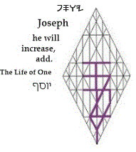

Joseph
You have the benefit
y
of taking your nourishment
w
from the Tree of Life
s.
Eat
p.
The
author
y
of your faith
w
is reliable
s.
He has made
allowance
p
for the need
y
to bridge the gap
between
w
your authority
s
and your expectations
p.
Be patient. You have reached
y
agreement
w.
From now and going forward—as the seasons come, and as they go before
the Tree of Life
s—you
may eat
p.
Gematria
156
wnq:
You are ordained
q
because you have taken upon yourself
n
the cross of HaMashiyach
w.
Numerology
48
jm
>
12
by
>
3
g:
Minister
m
to your companions
j,
that they may also humble themselves
y
and embrace
b
the processes of rebirth
g.
Targum:
Those who take up
y
the cross
w
are redeemed
s
in their nakedness
p.
|
site |
Font Stepping Stones |
book |